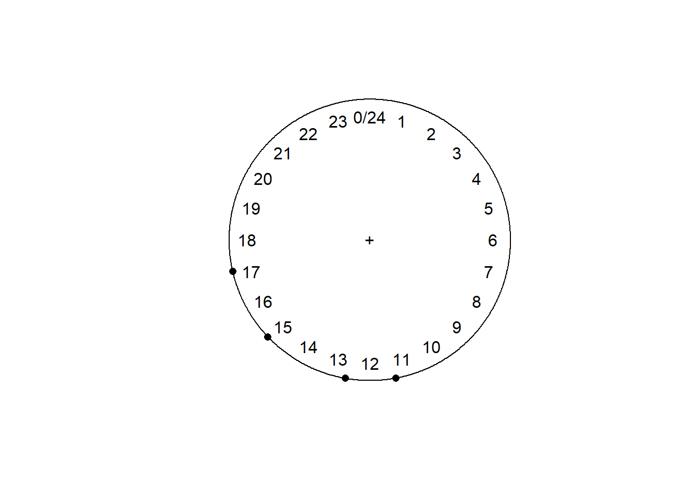
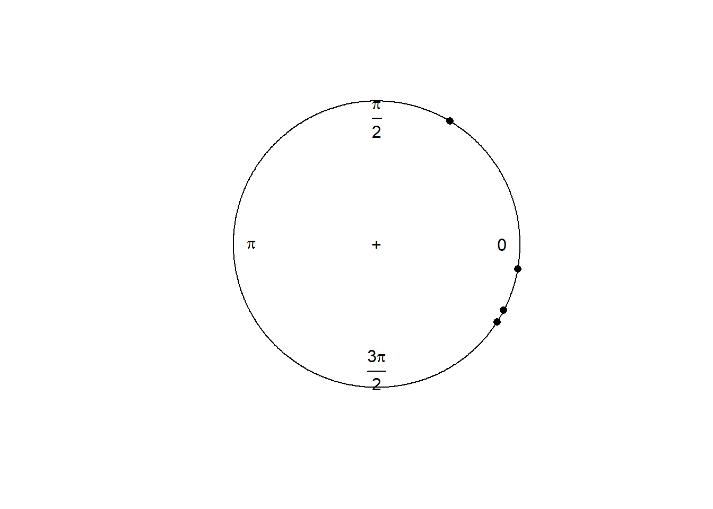

Capitulo 3 Detectando actividad
Se intenta agregar una columna que marque el registro como nocturno/crepuscular/diurno, en base:
- Diurnos: Registros entre el final del amanecer y el inicio del atardecer
- Nocturnos: Entre el final del atardecer y el inicio del amanecer se consideraron registros nocturnos
- Crepuscular: Entre el inicio del atardecer y el final del atardecer, y entre el inicio y el final del amanecer.
El set de datos que voy a utilizar va a ser el mismo con el que se viene ejemplificando, notar que ya tiene la hora solar incluida.
3.1 Utilizando suncalc
Registros entre el final del amanecer y el inicio del atardecer
library(suncalc)
######### IMPORTANTE DATOS ESTABAN EN UTC. ###########
datos$datetime <- force_tz(datos$datetime, tz="America/Montevideo")
# Ahora si obtengo sun_times
datos <- datos %>%
mutate(date = date(datetime)) %>%
rename(lon = long)
sun_times <- getSunlightTimes(data=datos, tz = "America/Montevideo")
# Amanecer
## Comienzo
datos$sunriseStart <- sun_times$sunrise
## Final
datos$sunriseEnd <- sun_times$sunriseEnd
# Atardecer
## Inicio
datos$sunsetStart <- sun_times$sunsetStart
## Final
datos$sunsetEnd <- sun_times$duskAhora se puede detectar si un registro es diurno, crepuscular o nocturno, siguiendo el método que hizo Cravino et al.
3.2 Etapa del día según hora solar
La idea es poder identificar si un registro cae en alguna de las siguientes categorías, utilizando la hora solar:

Los datos con los que se van a trabajar son los siguientes:
Primero hay que transformar esa hora solar en valores de angulos en un circulo. Utilizando radianes.
3.2.1 Hora solar a decimal y radianes
# Calcula el valor decimal de la hora
datos <- datos %>%
mutate(hora_decimal = hour(hora_solar)+ minute(hora_solar)/60 + second(hora_solar)/3600, # Se extrae la hora en valores decimales.
hora_radianes = hora_decimal * ((2 * pi)/24)) # También se almacena en radianes
plot(circular(prueba$hora_decimal), units = "hours", template="clock24")

Con esto se puede delimitar las categorias de nocturno, diruno y crepuscular facilmente:
datos <- datos %>%
mutate(etapa_dia = if_else(hora_decimal <= 4 & hora_decimal >= 0 | hora_decimal >= 20, "Nocturno",
if_else(hora_decimal >= 8 & hora_decimal <= 16, "Diurno", "Crepuscular")))3.3 Jugando con los datos
Ahora, por ej., se puede calcular cuantos registros de axis son nocturnos, diurnos o crepusculares en Cabo Polonio.
datos %>%
filter(sp == "Aaxi") %>%
group_by(etapa_dia) %>%
summarize("Cantidad de registros de Axis" = n())## # A tibble: 3 × 2
## etapa_dia `Cantidad de registros de Axis`
## <chr> <int>
## 1 Crepuscular 90
## 2 Diurno 86
## 3 Nocturno 55